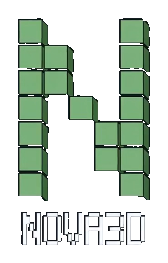
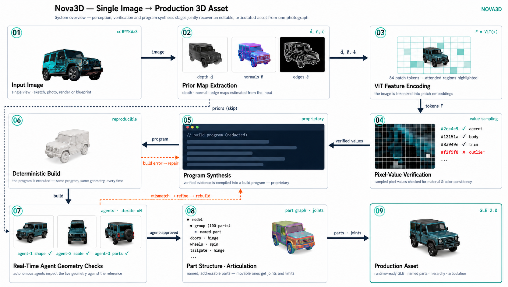
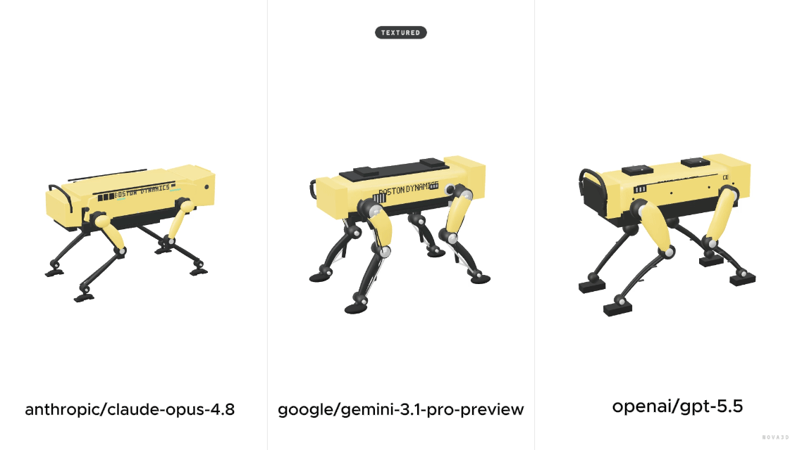
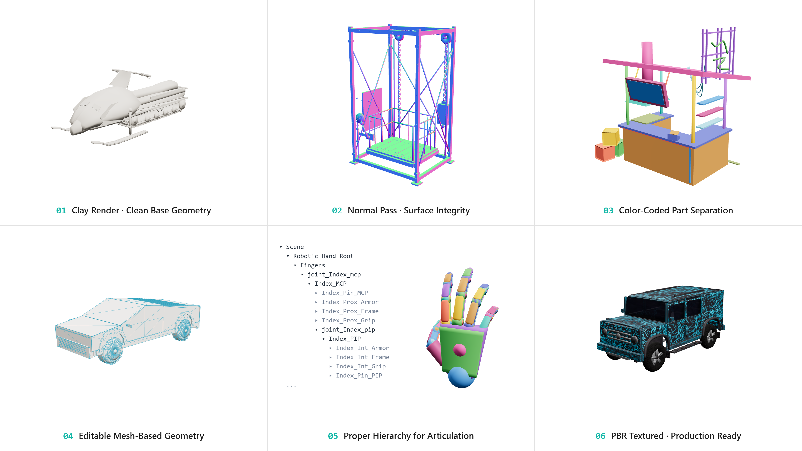
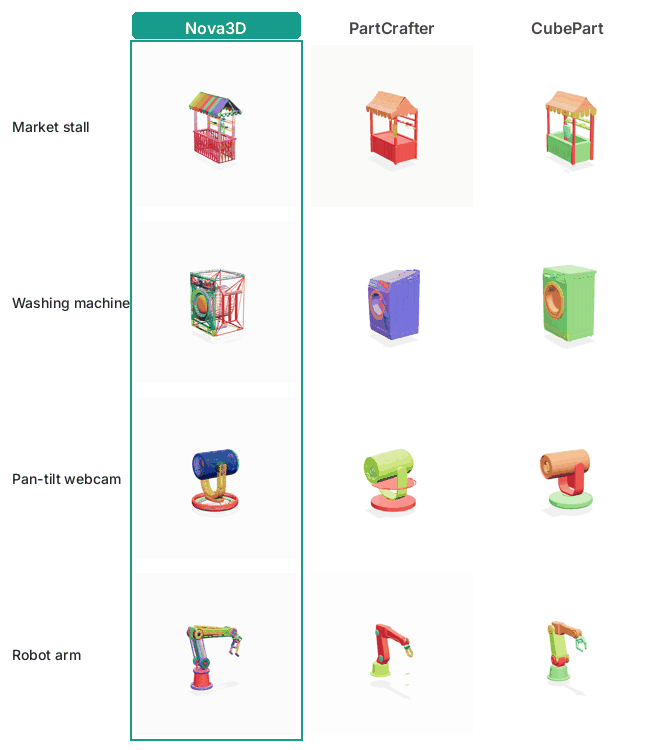

Articulation preview
Joint-aware assets can expose editable motion handles while preserving the original generated geometry.

Generating structured, editable, constraint-consistent 3D assets as executable programs.
Current 3D generative models mostly produce a final surface: a visually strong but largely opaque mesh. Interactive 3D worlds need more than a surface. They need named parts, an assembly hierarchy, measurable constraints, local edit handles, and joints for articulation. We present Nova3D, a system that generates 3D assets as executable Blender source code; the compiled mesh, a binary glTF (GLB), is treated as the artifact, not the asset. Because the output is a program, semantic handles exist at generation time rather than being recovered afterward by segmentation or rigging. We evaluate on Nova3D-Bench, a frozen, spec-grounded benchmark of 54 items across six domains and three difficulty levels with text and image inputs, against eleven baselines in four families (mesh-native, part-structured, code-native, and CAD) plus a same-LLM ablation. Nova3D produces an executable program and a valid artifact for 54/54 items. Every asset exposes named parts organized in a parent-child assembly tree; no mesh-native, CAD, or segmentation baseline exposes either. It satisfies 51/52 prompt-stated numeric and count constraints (best baseline: 11/52), passes 14/18 blinded local edits with locality preserved in 18/18, and articulates 59 joints across 12 assets at 98.3% geometric validity, where every baseline exposes zero native joints. Its geometry is competitive: it wins the structured domains in a pairwise shape-quality tournament and is second only to the strongest mesh-native model, while conceding texture realism to baked-PBR systems. The central result is representational: code-native generation turns a generated 3D object from an opaque surface into a programmable asset that downstream systems can inspect, measure, edit, and animate.
Nova3D writes an executable program; named parts, real dimensions, and the assembly tree exist in the source from the first token. The GLB is just the compiled artifact.
from nova3d.dsl import part, cylinder, box, parent_to, export_glb
# every object is named, measured, editable
body = part("Camera_Body", box(w=0.136, h=0.082, d=0.048))
mount = part("Lens_Mount", cylinder(r=0.024, depth=0.008))
barrel = part("Lens_Barrel", cylinder(r=0.031, depth=0.062))
ring = part("Focus_Ring", cylinder(r=0.033, depth=0.011))
parent_to(body, [mount]) # assembly tree
parent_to(mount, [barrel]); parent_to(barrel, [ring])
assert barrel.r < body.h / 2 # frozen constraint
export_glb("fujifilm_camera.glb") # compiled artifactOne photograph goes in; a runtime-ready, articulated GLB comes out. Perception grounds the build in evidence, depth, normal, and edge priors plus ViT patch features, and sampled pixel values are verified before a single line of the build program is written.

Because the asset is generated as code, the pipeline is not tied to a single backbone; swap the underlying model and the same generation, compilation, and inspection flow still holds.

Nova3D keeps generation inspectable across geometry, part separation, hierarchy, articulation, and PBR textured output.

Joint-aware assets can expose editable motion handles while preserving the original generated geometry.
Physically based material previews show how generated assets can carry richer surface detail while retaining an inspectable asset structure.
Pick an asset from the list to view its turntable preview.
Drag the slider to compare textured and wireframe outputs for the same object categories.
Nova3D never builds a fused mesh in the first place; every component is generated as its own named, watertight part, so any piece can be selected, retextured, replaced, or rigged on its own.

The others can only approximate this afterward: PartCrafter returns a handful of unnamed chunks, and CubePart must be handed the part names, then slices a finished mesh into capped, approximate regions.